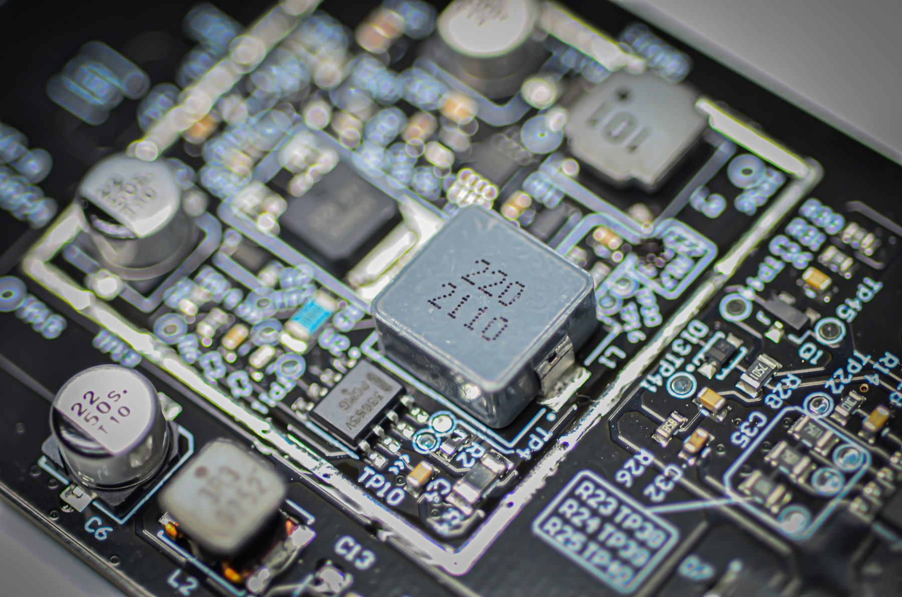
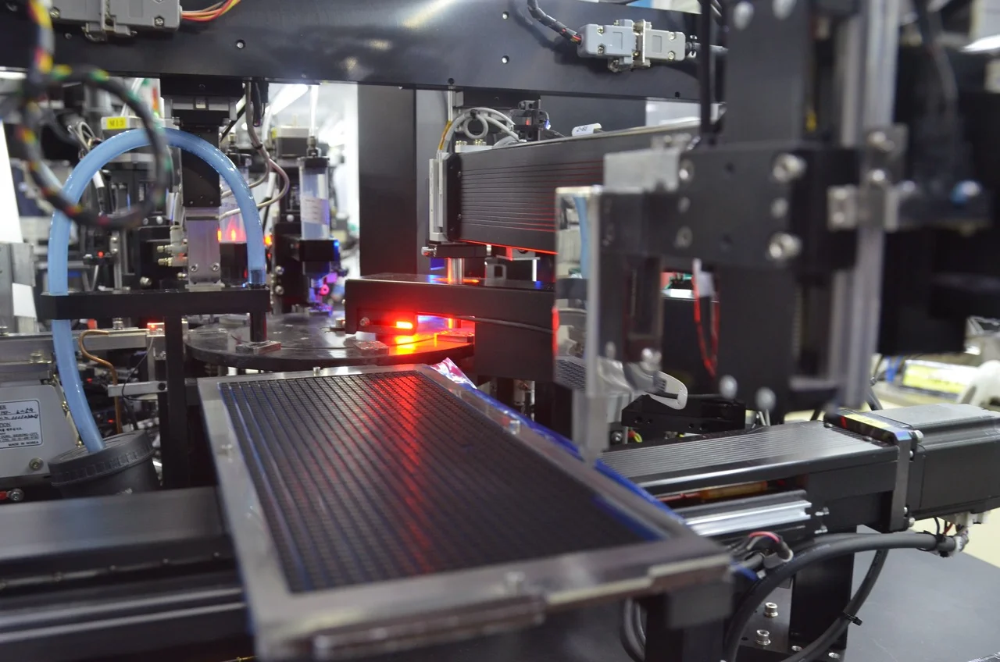
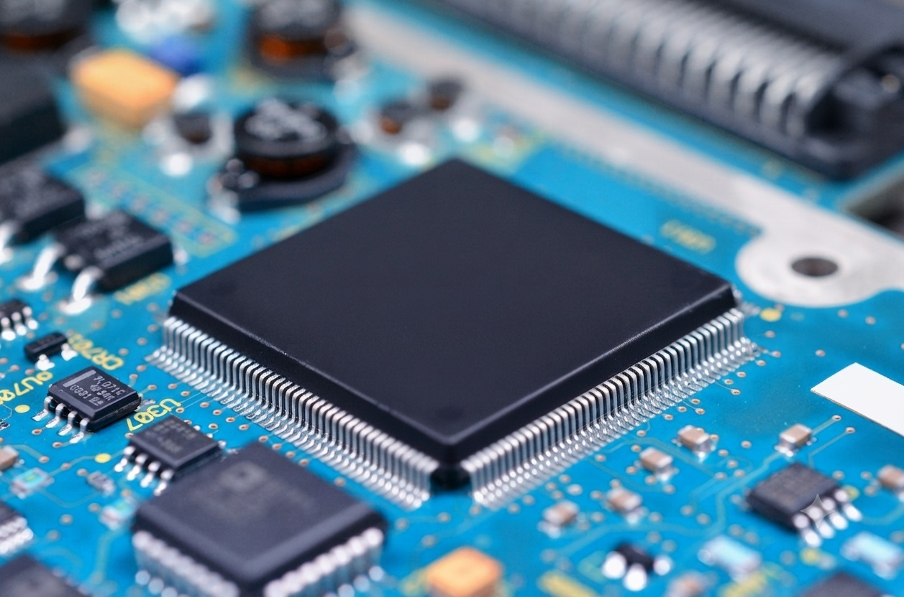
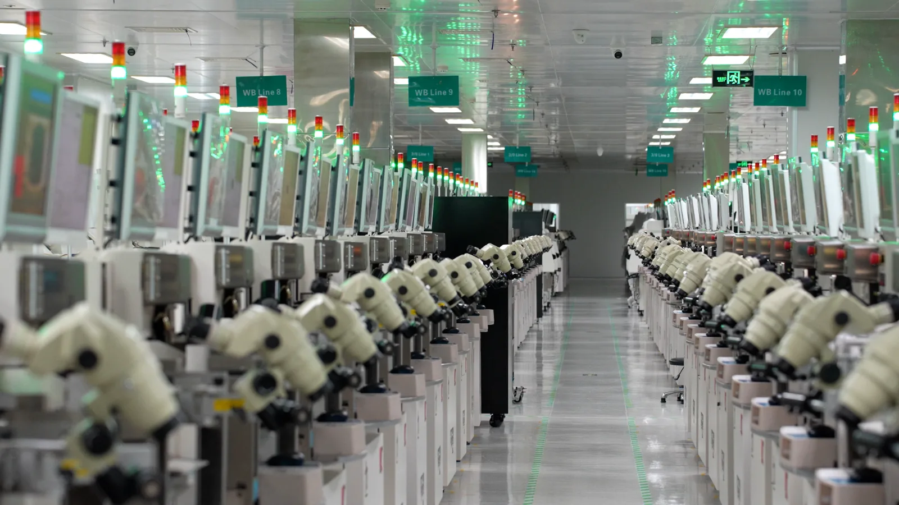

Wash plate is the dark full-width section template: a full-bleed .bgimg plus one or two wash layers inside .mk-dark. Five variants, WP-01 to WP-05. Swapping the photo per page is the variation; the wash keeps every section reading as the same brand block regardless of how the source image is lit or coloured.
WP-02 and WP-04 normalise the photo hardest — useful when a plant shot is warm or noisy. WP-01 and WP-03 keep more of the original image, so they want a photo that is already cool and clean. WP-05 stays closest to the flat-panel rule in the design system.

Industrial PCBAs can require additional protection against moisture, vibration, thermal cycling and mechanical loading. Hana applies conformal or parylene coating where specified, with through-hole assembly used for high-current or mechanically loaded connections and the soldering process selected to suit the design. AOI and X-ray inspection provide coverage of visible and hidden joints, with in-circuit and functional testing available according to program requirements.

Industrial PCBAs can require additional protection against moisture, vibration, thermal cycling and mechanical loading. Hana applies conformal or parylene coating where specified, with through-hole assembly used for high-current or mechanically loaded connections and the soldering process selected to suit the design. AOI and X-ray inspection provide coverage of visible and hidden joints, with in-circuit and functional testing available according to program requirements.

Industrial PCBAs can require additional protection against moisture, vibration, thermal cycling and mechanical loading. Hana applies conformal or parylene coating where specified, with through-hole assembly used for high-current or mechanically loaded connections and the soldering process selected to suit the design. AOI and X-ray inspection provide coverage of visible and hidden joints.

Industrial PCBAs can require additional protection against moisture, vibration, thermal cycling and mechanical loading. Hana applies conformal or parylene coating where specified, with through-hole assembly used for high-current or mechanically loaded connections and the soldering process selected to suit the design. AOI and X-ray inspection provide coverage of visible and hidden joints, with in-circuit and functional testing available according to program requirements.
Industrial PCBAs can require additional protection against moisture, vibration, thermal cycling and mechanical loading. Hana applies conformal or parylene coating where specified, with through-hole assembly used for high-current or mechanically loaded connections and the soldering process selected to suit the design. AOI and X-ray inspection provide coverage of visible and hidden joints.